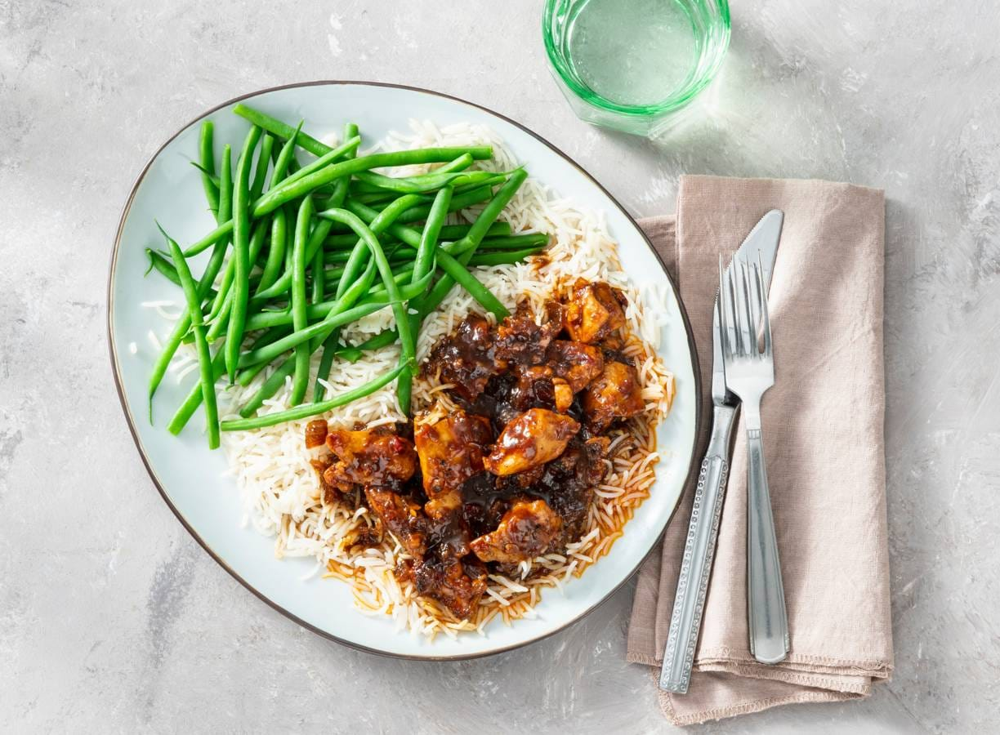

Zwarte kip

Nee, géén aangebrande kip, zwarte kip is een heerlijk kipgerecht met een 'zwarte' saus van sambal, ketjap, tamarinde, sojasaus en donkerbruine basterdsuiker.
Ingredienten (4 personen)
- 2 middelgrote uien
- 3 tenen verse knoflook
- 25 gram verse gemberwortel
- 359 gram kipdijfilet
- 2 eetlepel zonnebloemolie
- 1 eetlepel sambal badjak
- 3 eetlepel ketjap manis
- 2 eetlepel tamarindepasta
- 2 eetlepel sojasaus
- 1 eetlepel donkere basterdsuiker
- 100 ml kraanwater
Aan de slag
- Snipper de uien. Snijd de knoflook fijn. Schil de gember en snijd fijn. Snijd de kipdijfilet in grove stukken.
- Verhit de olie in een stoofpan en bak de kip op middelhoog vuur 5 min. aan. Voeg de ui, gember en knoflook toe en bak 5 min. mee.
- Voeg de sambal, ketjap, tamarindepasta, sojasaus en basterdsuiker toe en meng goed.
- Voeg het water toe, breng aan de kook en laat de kip in ca. 25 min. gaar stoven op laag vuur met het deksel op de pan. Haal de laatste 10 min. de deksel van de pan om de saus te laten inkoken. Lekker met witte rijst en groenten als broccoli, sperziebonen of paksoi.